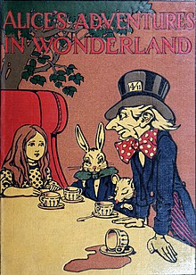

"Adventurer" and "Adventures" redirect here. For other uses, see Adventure (disambiguation) and Adventurer (disambiguation).
An adventure is an exciting experience or undertaking that is typically bold, sometimes risky.[1] Adventures may be activities with some potential for physical danger such as traveling, exploring, skydiving, mountain climbing, scuba diving, river rafting or participating in extreme sports. Adventures are often undertaken to create psychological arousal or in order to achieve a greater goal such as the pursuit of knowledge that can only be obtained in a risky manner.
Contents
1 Motivation
2 Mythology and fiction
2.1 Outdoors
2.2 Questing
2.3 Video games
3 Nonfiction works
4 Adventure sports
5 See also
6 References
7 External links
Motivation
Adventurous experiences create psychological arousal,[2] which can be interpreted as negative (e.g. fear) or positive (e.g. flow). For some people, adventure becomes a major pursuit in and of itself. According to adventurer André Malraux, in his La Condition Humaine (1933), "If a man is not ready to risk his life, where is his dignity?".
Similarly, Helen Keller stated that "Life is either a daring adventure or nothing."[3]
Outdoor adventurous activities are typically undertaken for the purposes of recreation or excitement: examples are adventure racing and adventure tourism. Adventurous activities can also lead to gains in knowledge, such as those undertaken by explorers and pioneers – the British adventurer Jason Lewis, for example, uses adventures to draw global sustainability lessons from living within finite environmental constraints on expeditions to share with schoolchildren. Adventure education intentionally uses challenging experiences for learning.
Author Jon Levy suggests that an experience should meet several criteria to be considered an adventure:[4]
Be remarkable—that is, worth talking about
Involve adversity or perceived risk
Bring about personal growth
Mythology and fiction
Some of the oldest and most widespread stories in the world are stories of adventure such as Homer's The Odyssey.[5][6][7]
The knight errant was the form the "adventure seeker" character took in the late Middle Ages.
The adventure novel exhibits these "protagonist on adventurous journey" characteristics as do many popular feature films, such as Star Wars[8] and Raiders of the Lost Ark.[9]

In video-game culture, an adventure game is a video game in which the player assumes the role of a protagonist in an interactive story driven by exploration and puzzle-solving.[10] The genre's focus on story allows it to draw heavily from other narrative-based media, literature and film, encompassing a wide variety of literary genres. Many adventure games (text and graphic) are designed for a single player, since this emphasis on story and character makes multi-player design difficult.[11]
Nonfiction works
From ancient times, travelers and explorers have written about their adventures.[12] Journals which became best-sellers in their day were written, such as Marco Polo's journal The Travels of Marco Polo or Mark Twain's Roughing It. Others were personal journals, only later published, such as the journals of Lewis and Clark or Captain James Cook's journals. There are also books written by those not directly a part of the adventure in question, such as The Right Stuff by Tom Wolfe or books written by those participating in the adventure but in a format other than that of a journal, such as Conquistadors of the Useless by Lionel Terray. Documentaries often use the theme of adventure as well.